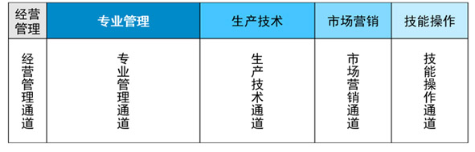
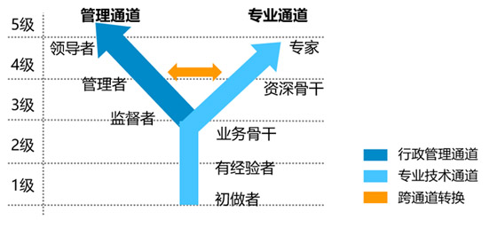
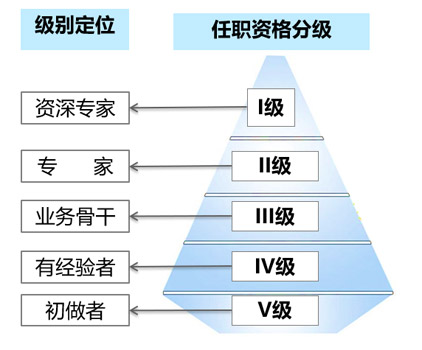
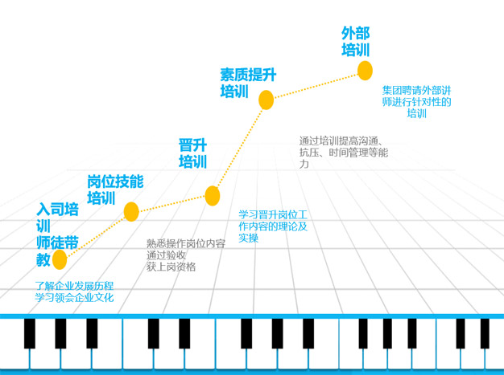
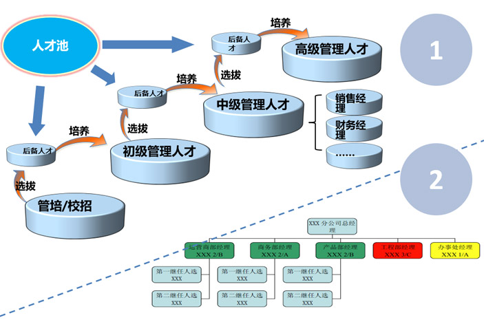

员工发展
1.开辟五大职类发展通道
针对不同类型人才，经营管理、专业管理、生产技术、市场营销、技能操作型，设立经营管理通道、专业管理通道、生产技术通道、市场营销通道、技能操作通道5大成长通道。
职业发展通道的设计遵循人才成长的五级模型，学习阶段-应用阶段-扩展阶段-指导阶段-领导创新阶段，对应设立了5个岗位职级。
开辟五大职类发展通道

职业发展通道里程碑设置
人才成长自有其内在规律，职业发展通道的设计遵循人才成长的五级模型，学习阶段-应用阶段-扩展阶段-指导阶段-领导创新阶段。

职业发展通道等级设置
员工所在岗位任职资格标准对应任职资格的某一等级，每一级任职资格的认证结果，将有3个等级的能力结果。

2.多维的培养发展
特驱集团对员工还设有多为培养方式，入司培训，师徒带教，岗位技能培训，晋升培训，素质提升培训，外部培训，我们不仅招纳贤才，更培养一流人才。
多维的培养发展

继任计划
特驱集团“继任者计划”于2015年8月正式全面启动，分“启航班”和“引航班”，分别针对普通员工和中层管理干部，通过循环提升系统，以充分挖掘人才管理潜质，提升集团管理层的整体管理水平，从而为集团发展输送源源不断人才,保持企业的核心竞争力。
